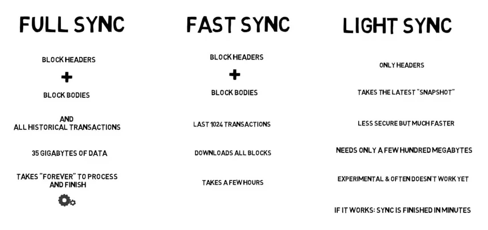
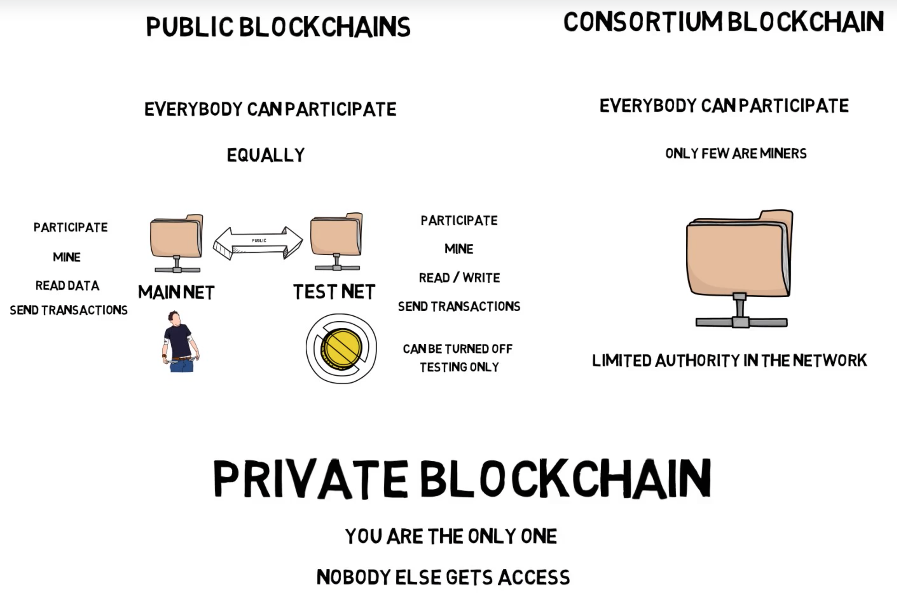
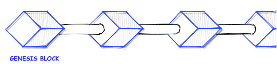

Ethereum Node
What is Ethereum Node?
- Device or program to communicate with decentralized network
- This peer-to-peer clients sync your copy of blockchain with rest of network
- Ensure you have the same copy as rest
- It performs transaction execution, managing wallets, read/write to blockchain
Node Types
- Light : Stores minimum amount of data required to be able to transact on network. Trust full node to feed its data.
- Full : Downloads, stores and verifies the full blockchain state
- Archive : Downloads, stores and verifies the full blockchain state. Does not prune older state data entries.
Interacting with ethereum blockchain
.png)
Remote Procedure Call (RPC)
- Fancy word which generally means calling procedures with arguments on remote systems
- Remote Procedure Call (RPC) is a protocol that one program can use to request a service from a program located in another computer on a network without having to understand the network's details.
- Specifications: https://www.jsonrpc.org/specification
Geth installation
Types of blockchain
Networks
participate, mine, read/write and send transactions
- Mainnnet - PoW (ETH 1.0)
- Testnets (Free ethers)
- Rinkeby - PoA
- Ropsten - PoW
- Goerli - PoA
- Kovan - PoA
The Genesis block
Attaching to geth via IPC
- Windows
geth attach
- Mac/Linux
geth attach ipc:/path/to/ipc
Managing account with geth
Using web3.js
Examples of web3-eth
web3.eth.getBalance: balance of an address at a given blockweb3.eth.signTransaction: sign a transactionweb3.eth.sendSignedTransaction: send a signed transaction to the Ethereum blockchain.
Examples of web3-shh
web3.shh.post: posts a whisper message to the networkweb3.shh.subscribe: creates a subscription to incoming whisper messages
Examples of web3-bzz
web3.bzz.upload: upload files and folders to Swarmweb3.bzz.download: download files and folders from Swarm
Examples of web3-net
web3.*.net.getID: returns the network IDweb3.*.net.getPeerCount: returns the number of peers that the node is connected to
Examples of web3-utils
web3.utils.toWei: converts Ether to Weiweb3.utils.hexToNumberString: converts a hexadecimal value to a stringweb3.utils.isAddresschecks if a given string is a valid Ethereum address.
Using ethers.js
Examples of ethers.provider
ethers.providers.InfuraProvider: connect to the Infura hosted network of Ethereum nodesethers.provider.getBalance: Balance of an address or a block in the blockchainethers.provider.resolve: resolve an Ethereum Name Service (ENS) name passed in to an Ethereum address.
Examples of ethers.contract
ethers.ContractFactory.fromSolidity: creates a “factory” for deployment of a smart contract from compiler output of the Solidity compiler or from the Truffle generated JSON fileethers.Contract allows you to interact with a smart contract once it has been deployed.
Examples of ethers.utils
ethers.utils.getContractAddress: retrieves a smart contract address from the transaction used to deploy the smart contractethers.utils.computeAddress: computes an address by passing the function the public or private key associated with the addressethers.utils.formatEtherwill format a passed in amount of Wei into a decimal string of Ether
Examples of ethers.wallet
ethers.wallet.createRandom: create a random new account.ethers.wallet.sign: sign a transaction and returns the signed transaction as a hex string.ethers.wallet.getBalance: balance of a wallet address.
Which library to use in my DApp?
- Popularity of library
- Maintenance of library
- Team behind development of library
- Tests in library
- Number of downloads of library
- Web performance of library
- Quality of documentation
- Licensing of library